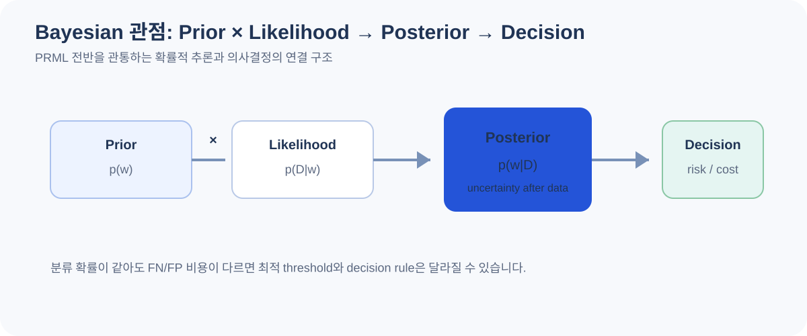
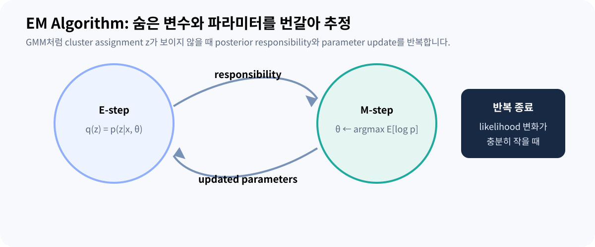
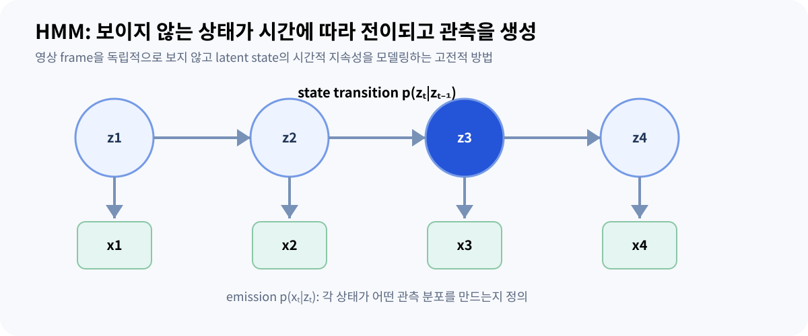

08 · PRML
PRML: 패턴인식과 머신러닝 전체 지도
Christopher M. Bishop의 Pattern Recognition and Machine Learning 14개 장을 확률·추론·예측·잠재변수의 연결 구조로 정리합니다.
PRML을 14개의 독립 알고리즘이 아니라 하나의 확률적 언어로 보기
PRML의 핵심은 알고리즘 이름을 많이 소개하는 데 있지 않습니다. 관측 데이터
D, 미지의 파라미터·잠재변수, 확률분포, 추론과 의사결정을 하나의
수학적 틀로 연결합니다. 2006년 책이라 현대 딥러닝 구조를 직접 다루지는 않지만,
loss, regularization, uncertainty, latent variable (모델에는 존재하지만 직접 관측되지 않는 숨은 변수), approximate inference
같은 개념을 이해하는 기반은 지금도 그대로 이어집니다.
Vision AI 관점에서는 픽셀·특징 벡터를 확률 변수로 보고, 분류는
p(class|x), 생성 모델은 p(x) 또는
p(x,z), 시계열은 p(x₁:T,z₁:T)처럼 확장해 생각할 수
있습니다. 딥러닝 모델이 확률론을 없앤 것이 아니라, 복잡한 함수 근사를 신경망이
담당하는 경우가 많아진 것입니다.
아래는 14개 장을 모두 포함한 학습용 해설입니다. 책의 문장·그림을 복제하지 않고, 장별 핵심 질문과 대표 수식, Vision AI 연결점을 재구성했습니다.
1장. Introduction: 확률, 결정, 정보량을 한 프레임에 넣기
1장은 polynomial curve fitting을 통해 과적합, regularization, model selection을 소개하고, 이후 책 전체에 쓰이는 확률론·결정이론·정보이론의 언어를 만듭니다. 데이터를 정확히 맞추는 모델과 새로운 데이터에 잘 일반화하는 모델은 다를 수 있습니다.

Bayesian 관점에서는 하나의 최적 파라미터만 고르는 대신 데이터 관측 후의
파라미터 불확실성 p(w|D)를 다룹니다. 예측은 가능한 파라미터에 대해
평균낼 수 있습니다. 반면 maximum likelihood는 likelihood를 가장 크게 만드는
파라미터를 찾습니다.
결정이론은 posterior를 얻은 뒤 어떤 행동을 할지 분리합니다. 예를 들어 불량을 놓치는 비용이 정상 오검보다 훨씬 크다면 단순 accuracy 최대화와 기대 비용 최소화는 다른 threshold를 만들 수 있습니다.


2장. Probability Distributions: 데이터 타입에 맞는 분포 선택
Bernoulli/Binomial과 Beta, Multinomial과 Dirichlet, Gaussian과 같은 분포를 통해 likelihood와 conjugate prior를 구체적으로 다룹니다. 핵심은 “분포 이름 암기”가 아니라 어떤 값의 support와 통계적 가정을 표현하는지 이해하는 것입니다.
| 관측 | 대표 분포 | conjugate prior 예 |
|---|---|---|
| 0/1 결과 | Bernoulli / Binomial | Beta |
| K개 범주 count | Multinomial | Dirichlet |
| 연속 벡터 | Gaussian | Gaussian-Wishart 계열 |
예를 들어 불량 발생 확률 θ에 Beta(2,2) prior를 두고 10개 중 불량 3개를 관찰하면 posterior는 Beta(5,9)가 됩니다. posterior mean은 5/14 ≈ 0.357입니다. 관측 비율 0.3과 다른 이유는 prior 정보가 함께 반영됐기 때문입니다.
Gaussian에서는 평균 벡터와 covariance가 핵심입니다. covariance는 feature들이 독립인지, 함께 변하는지를 표현합니다. 고차원 이미지에서 full covariance를 직접 추정하면 파라미터 수가 급증하므로 구조적 가정이나 차원 축소가 필요해집니다.


3장. Linear Models for Regression: basis와 Bayesian regression
선형 회귀에서 “linear”는 입력 x 자체가 아니라 파라미터 w에 대해 선형이라는
뜻입니다. 비선형 basis function φ(x)를 사용해도
y(x,w)=wᵀφ(x)이면 linear model입니다.
최소제곱은 Gaussian noise 가정 아래 maximum likelihood와 연결됩니다. L2 regularization을 더하면 Gaussian prior를 둔 MAP 추정과 연결됩니다. Bayesian linear regression에서는 w의 posterior 전체를 구해 predictive uncertainty까지 전파합니다.
| 관점 | 구하는 것 | 불확실성 |
|---|---|---|
| Least squares / ML (Maximum Likelihood, 이 문서 문맥에서는 가능도를 최대화하는 최대우도 추정) | 단일 w | noise를 별도 추정 |
| MAP | prior를 반영한 단일 w | w posterior는 버림 |
| Bayesian | p(w|D) | 예측 분포에 반영 |
Vision에서는 feature extractor가 만든 임베딩 위에 linear regression head를 붙이는 상황으로 생각할 수 있습니다. backbone이 비선형이어도 마지막 head 자체는 선형 모델일 수 있습니다.


4장. Linear Models for Classification: 경계와 확률을 구분
분류는 연속 target을 예측하는 회귀와 달리 class posterior 또는 decision boundary를 만듭니다. generative 방식은 class-conditional density와 prior를 모델링해 Bayes rule로 posterior를 만들고, discriminative 방식은 posterior 또는 경계를 직접 모델링합니다.
다중 클래스에서는 softmax를 사용해 K개 score를 정규화할 수 있습니다. logistic regression의 decision boundary는 입력 feature 공간에서는 선형이지만, 비선형 feature φ(x)를 쓰면 원 입력 공간에서는 비선형 경계를 만들 수 있습니다.
이 장의 관점은 딥러닝 분류 head에도 그대로 이어집니다. CNN이 복잡한 feature를 만든 뒤 마지막 linear layer와 softmax/cross-entropy가 class posterior를 근사하는 구조로 볼 수 있습니다.


5장. Neural Networks: 비선형 basis를 데이터로 학습하기
고정 basis function을 사람이 정하는 대신 neural network는 hidden unit의 비선형 변환 자체를 데이터로 학습합니다. feed-forward network, error backpropagation, Jacobian/Hessian, regularization과 Bayesian neural network 관점이 이 장의 주요 주제입니다.
역전파는 특정 신경망 전용 마법이 아니라 chain rule을 효율적으로 재사용하는 알고리즘입니다. 현대 autograd가 같은 원리를 자동화합니다. PRML의 network는 오늘날의 대규모 CNN/Transformer보다 작지만, loss surface와 regularization, uncertainty에 대한 개념적 토대는 같습니다.
Mixture Density Network처럼 네트워크가 단일 scalar가 아니라 확률분포의 파라미터를 출력하게 만들 수도 있습니다. 즉 neural network는 “분류기”라는 하나의 모델 종류보다 복잡한 함수의 parameterization 도구로 보는 편이 일반적입니다.


6장. Kernel Methods: 명시적 고차원 변환 없이 유사도 계산
Kernel method는 두 입력의 feature-space inner product를
k(x,x')로 계산합니다. 적절한 kernel을 쓰면 고차원 feature vector를
직접 만들지 않고도 비선형 관계를 다룰 수 있습니다.
이 장은 dual representation, kernel construction, RBF (Radial Basis Function, 거리 기반 방사형 기저 함수) networks, Gaussian Processes(GP (Gaussian Process, 함수에 대한 확률분포를 정의하는 가우시안 프로세스))를 포함합니다. GP는 함수 값들의 joint Gaussian distribution을 정의해 예측 평균뿐 아니라 불확실성도 제공합니다. 데이터 수 N에 대한 kernel matrix 계산과 역행렬 비용 때문에 대규모 데이터에서는 계산이 큰 제약이 됩니다.
딥러닝의 learned embedding에서도 cosine/RBF 같은 similarity를 사용하지만, 그것이 곧 classical kernel machine과 같은 학습 알고리즘이라는 뜻은 아닙니다.


7장. Sparse Kernel Machines: 결정에 필요한 일부 샘플에 집중
SVM은 margin을 최대화하는 결정 경계를 찾고, soft-margin에서는 일부 위반을 허용해 데이터가 완전히 separable하지 않은 상황을 다룹니다. 해는 많은 경우 일부 training point인 support vector에 의해 결정됩니다.
Relevance Vector Machine(RVM (Relevance Vector Machine, Bayesian 관점의 희소 커널 모델))은 유사한 kernel 형태를 Bayesian sparse model로 구성하지만 SVM과 목적함수와 확률적 해석이 다릅니다. RVM은 automatic relevance determination을 통해 많은 weight를 사실상 제거해 sparse solution을 얻습니다.
Vision에서 작은 데이터로 handcrafted feature나 고정 embedding을 분류할 때 SVM은 여전히 유효한 baseline이 될 수 있습니다. deep model과 비교할 때는 feature extractor 학습 여부까지 포함해 공정하게 비교해야 합니다.


8장. Graphical Models: 복잡한 확률분포의 구조를 그림으로 표현
그래프의 node는 random variable, edge와 factor는 dependency 구조를 표현합니다. Directed graph인 Bayesian Network와 undirected graph인 Markov Random Field(MRF (Markov Random Field, 무방향 그래프로 변수 의존성을 표현하는 모델)), factor graph는 factorization과 conditional independence를 읽는 방식이 다릅니다.
d-separation은 그래프 구조만으로 conditional independence를 판단하는 규칙입니다. Tree나 chain에서는 sum-product로 marginal을 효율적으로 계산하고, max-sum은 가장 가능성 높은 상태 조합을 찾는 데 연결됩니다.
PRML은 image denoising을 MRF 예시로 다룹니다. 각 pixel label이 이웃과 비슷하기를 선호하면서 관측 pixel과도 맞도록 energy를 구성하는 방식입니다. 현대 segmentation의 CNN과 계산 구조는 다르지만 “지역 일관성과 관측 evidence를 함께 사용한다”는 관점은 비교해 볼 수 있습니다.


9장. Mixture Models and EM: 보이지 않는 군집 변수를 추론
Gaussian Mixture Model(GMM (Gaussian Mixture Model, 여러 Gaussian 분포를 섞어 데이터를 표현하는 모델))은 하나의 Gaussian으로 설명하기 어려운 데이터를 여러 component의 weighted sum으로 모델링합니다. 각 데이터가 어느 component에서 왔는지 나타내는 latent assignment z가 관측되지 않았기 때문에 직접 최적화가 복잡해집니다.

EM은 E-step에서 현재 파라미터로 latent variable의 posterior responsibility를 계산하고, M-step에서 그 responsibility를 가중치처럼 사용해 파라미터를 갱신합니다. 두 단계를 반복하면 likelihood는 감소하지 않는 방향으로 진행하지만 global optimum을 보장하는 것은 아닙니다.
K-means는 hard assignment를 쓰는 군집화로 볼 수 있고, GMM은 soft probability를 제공합니다. 이미지 embedding을 군집화할 때 cluster 번호를 실제 의미 label로 자동 해석하면 안 되며, feature와 distance assumption을 함께 확인해야 합니다.


10장. Approximate Inference: 정확한 posterior가 너무 어려울 때
복잡한 latent-variable model에서는 posterior 적분이나 합을 정확히 계산하기 어려운 경우가 많습니다. Variational Inference는 다루기 쉬운 분포 q를 정하고 실제 posterior에 가깝도록 최적화합니다.
mean-field variational inference는 q를 여러 factor의 곱으로 제한해 계산을 단순화합니다. 제한된 family 때문에 근사 오차가 생깁니다. Expectation Propagation은 각 factor를 근사하고 moment matching을 반복하는 다른 접근입니다.
현대 VAE에서도 ELBO가 핵심 objective로 등장합니다. PRML의 variational inference를 이해하면 “왜 reconstruction term과 KL (Kullback–Leibler divergence, 두 확률분포 차이를 나타내는 발산량) term이 함께 나오는가?”를 확률 모델 관점에서 연결하기 쉬워집니다.


11장. Sampling Methods: 적분 대신 샘플로 기대값 계산
분포에서 직접 적분하기 어렵다면 sample을 이용해 기대값을 근사할 수 있습니다. Rejection sampling, importance sampling, Sampling-Importance-Resampling, MCMC (Markov Chain Monte Carlo, Markov chain을 이용한 Monte Carlo sampling), Metropolis-Hastings, Gibbs, slice sampling, Hybrid/Hamiltonian Monte Carlo가 이 장의 주요 흐름입니다.
importance sampling은 target p에서 직접 sample하기 어려울 때 proposal q에서
sample하고 weight p(x)/q(x)를 사용합니다. q가 중요한 영역을 충분히
덮지 못하면 몇 sample의 weight가 지배해 분산이 커질 수 있습니다.
MCMC sample은 독립이 아닐 수 있으므로 단순히 sample 개수만 보고 품질을 판단하면 안 됩니다. mixing, autocorrelation, burn-in과 여러 chain의 일관성을 함께 봐야 합니다.


12장. Continuous Latent Variables: 고차원 데이터를 낮은 좌표로 설명
PCA는 가장 큰 분산 방향을 찾는 관점과 reconstruction error를 최소화하는 관점이 같은 해로 이어집니다. Probabilistic PCA (Principal Component Analysis, 주성분 분석)(PPCA (Probabilistic PCA, PCA의 확률적 잠재변수 모델))는 PCA를 Gaussian latent-variable model로 표현해 likelihood와 EM, Bayesian 확장으로 연결합니다.
이 장은 PCA, PPCA, Bayesian PCA, factor analysis, kernel PCA, ICA (Independent Component Analysis, 독립 성분 분석), autoassociative neural network와 nonlinear manifold modelling까지 이어집니다. 차원 축소는 visualization만을 위한 것이 아니라 noise 제거, 압축, latent structure 탐색에 사용됩니다.
Vision embedding을 PCA로 줄일 때 explained variance가 높다는 사실이 downstream 분류에 필요한 정보가 모두 보존됐다는 뜻은 아닙니다. 분산이 큰 방향과 task에 중요한 방향은 다를 수 있으므로 목적에 맞는 평가가 필요합니다.


13장. Sequential Data: 시간 순서를 확률 모델에 넣기
정적인 샘플이 아니라 시간 순서 x₁:T를 다루면 현재 상태와 이전 상태의
dependency를 표현해야 합니다. Markov model은 제한된 과거만으로 다음 상태를 설명하는
가정을 사용합니다.

Hidden Markov Model(HMM (Hidden Markov Model, 숨은 Markov 상태와 관측을 연결하는 시계열 모델))은 discrete latent state와 emission model을 사용합니다. forward-backward는 각 시점의 state posterior, Viterbi는 가장 가능성 높은 state sequence를 계산합니다. Linear Dynamical System(LDS (Linear Dynamical System, 연속 잠재 상태를 갖는 선형 동역학 모델))은 continuous latent state로 확장되며 Kalman filtering/smoothing과 연결됩니다. nonlinear/non-Gaussian 상황에서는 particle filter 같은 sampling 기반 방법이 필요할 수 있습니다.
영상 이상 검출에서 frame별 classifier 결과를 독립적으로 thresholding하는 대신 “상태가 시간적으로 지속될 가능성”을 명시적으로 모델링하고 싶다면 HMM 관점이 하나의 대안입니다. 단, 실제 적용은 transition 가정이 공정과 맞는지 검증해야 합니다.


14장. Combining Models: 여러 예측을 어떻게 결합할까?
마지막 장은 Bayesian Model Averaging, committees, boosting, tree-based models, conditional mixture models와 mixtures of experts를 다룹니다. 단순 평균과 “서로 다른 모델 가설에 대한 posterior averaging”은 개념적으로 다릅니다.
ensemble이 효과적이려면 모델들이 모두 같은 오류를 반복하지 않는 것이 중요합니다. Boosting은 이전 단계가 틀린 샘플에 더 집중하는 방식으로 weak learner를 순차적으로 결합합니다. Mixture of Experts는 gating model이 입력에 따라 어떤 expert를 얼마나 사용할지 결정합니다.
| 결합 방식 | 핵심 | 주의점 |
|---|---|---|
| Average / committee | 여러 predictor 평균 | 상관된 오류면 이득 제한 |
| Bayesian model averaging | model posterior로 가중 평균 | model set과 posterior 계산 필요 |
| Boosting | 순차적으로 어려운 샘플 보완 | noise/outlier 민감 가능 |
| Mixture of experts | 입력별 gating | expert collapse·학습 안정성 |
현대 deep ensemble, snapshot ensemble, mixture-of-experts Transformer는 세부 알고리즘이 PRML의 예시와 다를 수 있지만 “여러 가설을 결합해 bias/variance 또는 전문화를 다룬다”는 상위 관점에서 연결해서 볼 수 있습니다.


PRML 개념을 Vision AI 개발에 다시 연결하기
| PRML 개념 | Vision AI에서 만나는 형태 | 실무 질문 |
|---|---|---|
| Bayes / Decision theory | class probability + threshold | FN과 FP 비용이 같은가? |
| Regularization | weight decay, augmentation | train-val gap이 어떤가? |
| Latent variable | embedding, generative model | 관측되지 않은 요인이 무엇인가? |
| Approximate inference | VAE (Variational Autoencoder, 변분 추론을 사용하는 생성 모델)·Bayesian model | 정확한 posterior 계산이 가능한가? |
| Sequential model | video/frame state | frame independence 가정이 맞는가? |
| Model combination | ensemble·MoE (Mixture of Experts, 여러 expert와 gating을 결합하는 구조) | 오류가 서로 얼마나 상관되는가? |
PRML을 처음부터 모든 증명을 따라가며 읽는 것도 가능하지만, Vision AI 실무와 연결하려면 1→2→3/4→5→8/9→10/11→12/13→14 순으로 “확률적 질문”을 먼저 잡고, 필요한 수학을 다시 내려가는 방식이 효율적입니다. CNN/ViT 구조 자체는 별도 문서에서 보고, PRML에서는 왜 그 출력을 probability/loss/decision으로 해석하는지 보완하는 것이 좋습니다.
각 장을 읽을 때 (1) 관측 변수, (2) 미지 변수/파라미터, (3) likelihood, (4) prior가 있는지, (5) 정확한 추론이 가능한지, (6) 최종 decision rule이 무엇인지 여섯 칸으로 정리해 보세요.

출처와 더 확인할 자료
본문은 이해를 위한 한국어 해설입니다. 도식은 직접 재구성했으며, 가상 수치와 단순화한 구조는 해당 위치에 표시했습니다.
- Christopher M. Bishop · PRML 공식 페이지 ↗저자 공식 자료. 책 소개, 목차/샘플, 슬라이드, errata와 교육·연구 목적 figure 자료를 제공합니다.
- Pattern Recognition and Machine Learning · Microsoft Research ↗2006년 Springer 출판 정보와 공식 PDF 접근점.
- PRML · 전체 PDF ↗14개 장 전체의 원문. 이 학습 문서는 원문의 문장·그림을 복제하지 않고 개념을 요약·재구성했습니다.